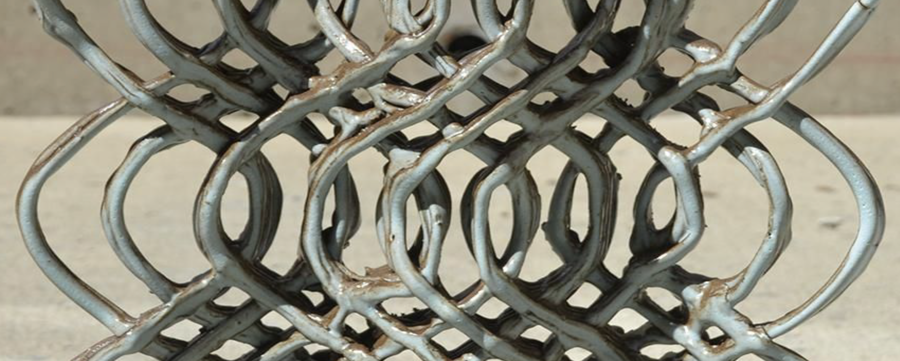
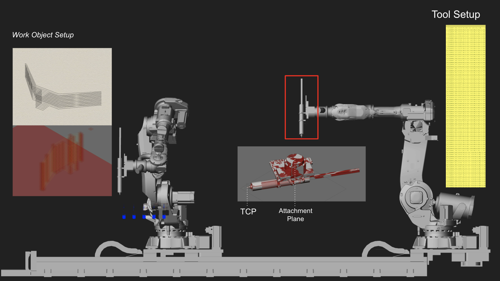
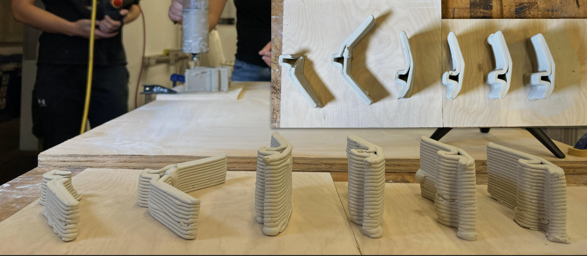
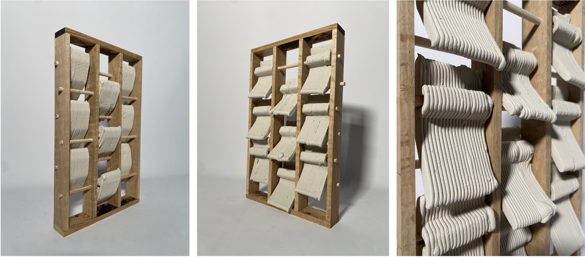
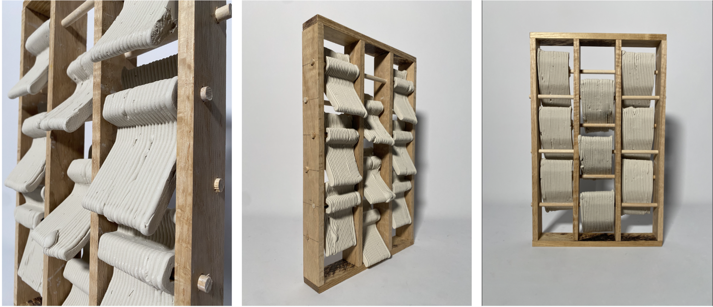

I worked on this project with my friends Howie, Robert, Shray, Tory at CMU's DFAB Lab under supervision of Professor Bidgoli.
In this project, we wanted to explore how robotics can be used in the creative process, specifically in its design implications and applications in facade systems. We are specifically interested in using clay as the material. We learned that clay prints can change significantly before, during, and after the 3D printing process, due to the malleability of the material and the environmental conditions in the drying process. Thus, one must reconsider the precision they can really achieve with these clay components, especially in an aggregate assembly. One interesting opportunity is that the extrusion of clay leaves visible traces on the surface, resulting in an unexpected expression. We will study the different features of clay, and how different settings will make the design outcome unique, The project will also explore printing on non-linear surface with introduction of new materials into the printing process. We will study how clay react to different surfaces, and how printing on non-linear surface differs from traditional surfaces. We will also create new ways to connect wood and clay.
The robot we used is the ABB IRB 4400 with a custom-made suction tube that emits clay. The tube has a motor that connected to an external outlet, and the speed of the extrusion needs to be adjusted by manually adjusting the motor.


We had to make sure the clay is not too wet or too dry in order for the extrusion to be smooth.
With the extrusion tool and the clay ready, the next step is to set up the work objects and the printing paths in RobotStudio and Rhino Grasshopper!

Then we did lots and lots of test prints...
Some were successful and many were not

We encountered several challenges along the way. We were not able to complete resolve them, but we found ways to mitigate them.
Unavoidably, there were air bubbles in the clay. When extruding, this became troublesome as it distorts the printing layers. We were able to mitigate it by aligning the cartridge horizontally; this minimizes the potential of air bubbles forming within the material, generating a more consistent print flow and module
It's hard to find a completely even board - and in our case even a difference in millimeter will affect the result. We mitigate this problem by printing small amounts of structures each time - two printed modules per plate, ensuring flexibility in mass production from printing & drying

When the nozzle is too high up, the clay will not stick to the board. We mitigate this problem by manually increase speed in the first layer for faster extrusion to cover the gap.
Here's the final result! Though it's on a smaller scale, we imagine it to represent a facade where each of this modules serves as a half-opened window that woule rotate and brings an opening to the facade
 